#7116 Frankie und seine Spießgesellen
Alternativ: Ocean's 11 (Englischer Titel)
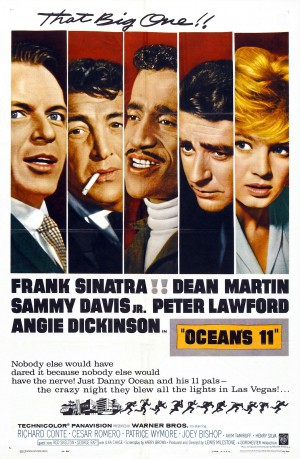 
 IMDB-Wertung: 6.6 / 10
IMDB-Wertung: 6.6 / 10  Metascore: 0
Metascore: 0 
A band of soldier friends from the 82nd airborne regroup 15 years later to rob millions of dollars from five Las Vegas casinos. When one of the eleven's future step-father learns who pulled the job, the crew must find a way to smuggle the loot out of town before their payoff is cut in half.
Jahr: 1960
Dauer: 127 Minuten
FSK: 6
Land: USA Studio: Warner Bros.Tonspuren:
Untertitel: Deutsch,
Auflösung: 1080p (1920x800) Größe: 6666 MB
Genre: Thriller, Musik, Komödie, Krimi
Regisseur: Lewis Milestone
Drehbuch: Harry Brown
Soundtrack: Nelson Riddle
Darsteller:
- 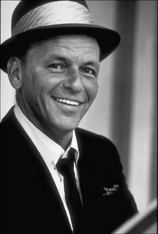 Frank Sinatra als Danny Ocean
- 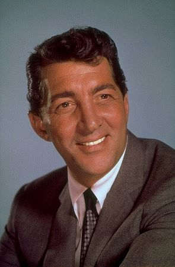 Dean Martin als Sam Harmon
- Sammy Davis Jr. als Josh Howard
- Peter Lawford als Jimmy Foster
- 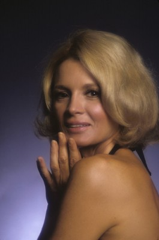 Angie Dickinson als Beatrice Ocean
- 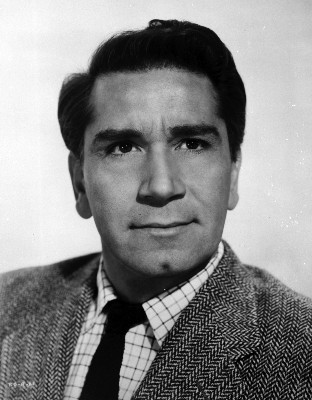 Richard Conte als Anthony Bergdorf
- Cesar Romero als Duke Santos
- Patrice Wymore als Adele Ekstrom
- Joey Bishop als 'Mushy' O'Connors
- 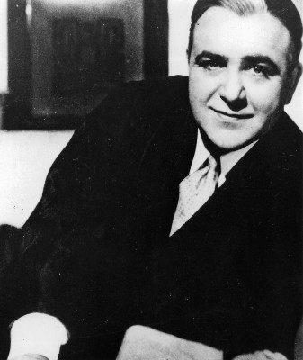 Akim Tamiroff als Spyros Acebos
 Henry Silva als Roger Corneal
Henry Silva als Roger Corneal- Ilka Chase als Mrs. Restes
- Buddy Lester als Vince Massler
- Richard Benedict als 'Curly' Steffans
- Jean Willes als Mrs. Bergdorf
- 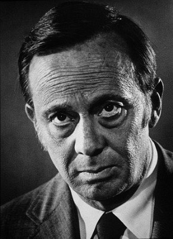 Norman Fell als Peter Rheimer
- Lew Gallo als Adele's Date
 Robert Foulk als Sheriff Wimmer
Robert Foulk als Sheriff Wimmer- Red Skelton als Gambler
- George Raft als Jack Strager
- 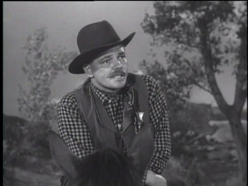 Robert Bice als Deputy (scenes deleted)
- 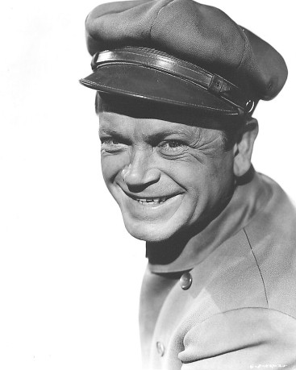 Murray Alper als Deputy (uncredited)
- 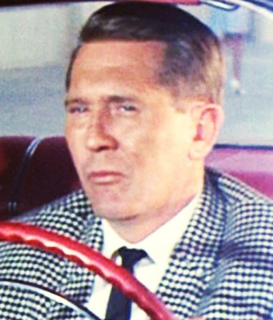 Don Anderson als Bar Patron (uncredited)
- 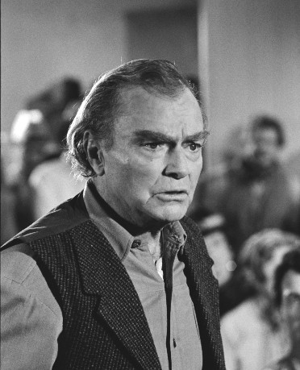 Don 'Red' Barry als McCoy (uncredited)
- 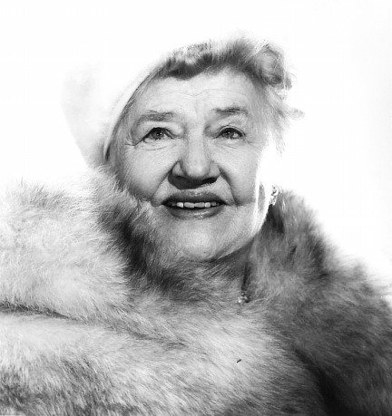 Marjorie Bennett als Mrs. Allenby (uncredited)
 Richard Boone als Voice of Minister (uncredited)
Richard Boone als Voice of Minister (uncredited) Paul Bryar als Cop (uncredited)
Paul Bryar als Cop (uncredited)- John Craven als Cashier (uncredited)
- Gregory Gaye als Freeman - Casino Owner (uncredited)
- 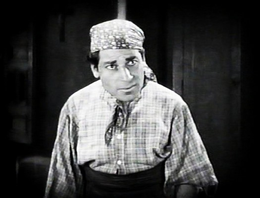 John George als Midget (uncredited)
- Hoot Gibson als Roadblock Deputy (uncredited)
 Joe Gray als Pit Boss (uncredited)
Joe Gray als Pit Boss (uncredited)- Brad Harris als Minor Role (uncredited)
- 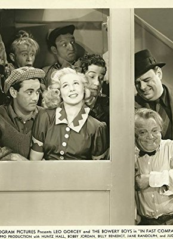 John Indrisano als Texan (uncredited)
 Michael Jeffers als Casino Patron (uncredited)
Michael Jeffers als Casino Patron (uncredited) Nelson Leigh als Doctor / Specialist (uncredited)
Nelson Leigh als Doctor / Specialist (uncredited)- David Leonard als Rabbi (uncredited)
- 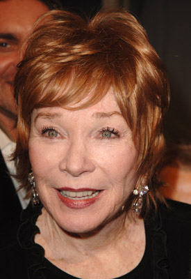 Shirley MacLaine als Tipsy Girl (uncredited)
- 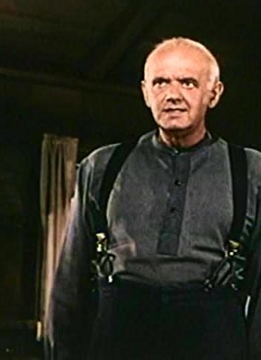 Charles Meredith als Mr. Cohen - Mortician (uncredited)
- Anne Neyland als Dolores (uncredited)
 William H. O'Brien als Waiter at Burlesque Club (uncredited)
William H. O'Brien als Waiter at Burlesque Club (uncredited)- 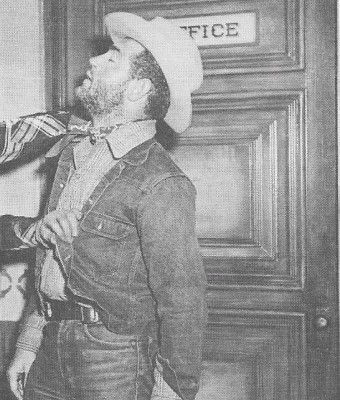 Steve Pendleton als Major Taylor (uncredited)
 Jack Perrin als American Legionnaire at Funeral Service (uncredited)
Jack Perrin als American Legionnaire at Funeral Service (uncredited)- Carmen Phillips als Hungry Girl (uncredited)
- Louis Quinn als DeWolfe (uncredited)
- 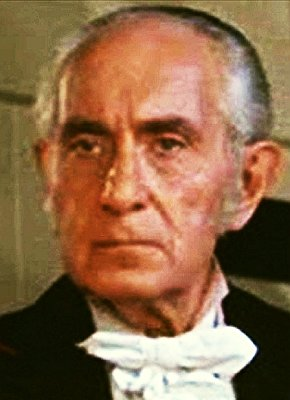 Fred Rapport als Casino Patron (uncredited)
- 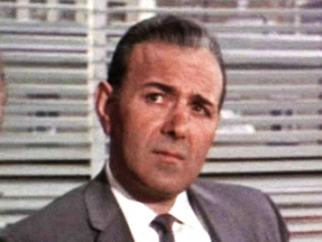 Cosmo Sardo als Barber (uncredited)
- 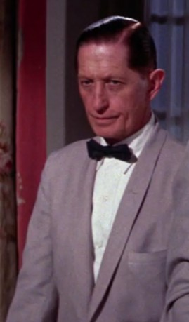 Jeffrey Sayre als Customer at Drucker's (uncredited)
- Joan Staley als Helen (uncredited)
- George E. Stone als Proprietor (uncredited)
Datei: X:\5-Pentalogie(A-Z)\Oceans 11-12-13\Frankie und seine Spießgesellen (1960, FSK6, 1920x800).mkv seit 15.12.2017
Festplatte: HD Collection-3(N-Z)-6(A-Z)
 Es gibt insgesamt 8 Filme in der Gruppe '5-Pentalogie(A-Z)\Oceans 11-12-13'
Es gibt insgesamt 8 Filme in der Gruppe '5-Pentalogie(A-Z)\Oceans 11-12-13'